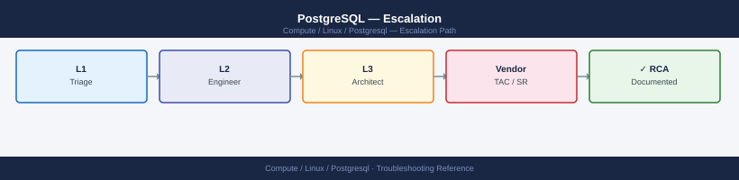
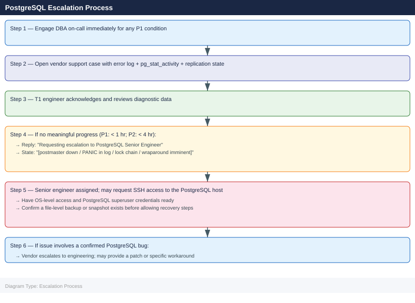

PostgreSQL — Escalation¶

Before you begin¶
- Access required:
postgresOS user orsudoaccess; PostgreSQL superuser role; vendor support account at your PostgreSQL support provider (EDB, Percona, or Crunchy Data) - Do NOT restart the postmaster when a PANIC entry is in the log without DBA guidance — a restart may overwrite shared memory state that is needed to diagnose the corruption
- Do NOT delete WAL files manually — WAL files are the transaction journal; deleting them causes data loss and makes the cluster unrecoverable without a full restore
- Do NOT cancel long-running transactions during a lock wait incident without DBA review — the blocking transaction may be in a state where cancellation causes a partial rollback that takes longer than the original transaction
When to Escalate Immediately¶
Escalate to DBA on-call and open a vendor support case without delay for any of these:
- Postmaster down —
systemctl status postgresqlshows failed;pg_isreadyreturns error - PANIC in error log — indicates data corruption or unrecoverable error; do not restart without DBA
- Lock wait chain > 10 minutes with application impact; applications timing out
- Disk > 90% on PGDATA directory or WAL volume — writes failing or about to fail
- XID wraparound imminent — log message:
database with OID XXXXX must be vacuumed within X transactions - Replication slot lag > 10 GB — slot is retaining WAL and filling the disk
- Connection exhaustion —
FATAL: remaining connection slots are reserved for non-replication superuser connections
Pre-Escalation Self-Check¶
Run these before opening the case.
| Check | Command | Expected result |
|---|---|---|
| PostgreSQL version | psql -c "SELECT version();" |
Note full version |
| Service status | systemctl status postgresql or pg_isready |
Running / accepting connections |
| Active connections | psql -c "SELECT count(*) FROM pg_stat_activity;" |
Below max_connections |
| Lock waits | psql -c "SELECT count(*) FROM pg_locks WHERE NOT granted;" |
Zero |
| Replication lag | psql -c "SELECT * FROM pg_stat_replication;" |
sent_lsn close to write_lsn |
| Disk space | df -h $PGDATA |
Below 80% used |
| WAL volume | df -h on pg_wal or pg_xlog partition |
Below 80% used |
| Autovacuum running | psql -c "SELECT count(*) FROM pg_stat_activity WHERE query LIKE 'autovacuum%';" |
> 0 (autovacuum active) |
| Error log recent | tail -50 /var/log/postgresql/postgresql-*.log |
No PANIC or FATAL entries |
Step-by-Step Data Collection¶
1. Get the PostgreSQL version and configuration¶
# Version
psql -U postgres -c "SELECT version();"
# Key configuration parameters
psql -U postgres -c "SHOW ALL;" > /tmp/pg-config-$(date +%Y%m%d).txt
# Data directory and log path
psql -U postgres -c "SHOW data_directory; SHOW log_directory;"
version
────────────────────────────────────────────────────────────────────────────────
PostgreSQL 14.8 on x86_64-pc-linux-gnu, compiled by gcc (GCC) 11.2.0, 64-bit
(1 row)
name | setting | description
─────────────────────────────────┼─────────────────────────────────┼──────────────────────────
allow_system_table_mods | off | Allows modifications of...
application_name | psql | Sets the application name
archive_command | (disabled) | Sets the shell command...
archive_mode | off | Allows archiving of WAL
...
(330 rows)
data_directory | /var/lib/postgresql/14/main
log_directory | /var/log/postgresql
(2 rows)
Common errors
psql: error: connection to server on socket "/var/run/postgresql/.s.PGSQL.5432" failed: FATAL: role "postgres" does not exist — Create the postgres superuser role with sudo -u postgres createuser -s postgres or verify the role exists with psql -U postgres -l.
psql: error: could not translate host name "localhost" to address: Name or service not known — Ensure PostgreSQL is running with sudo systemctl status postgresql and verify the connection parameters are correct.
Permission denied when writing to /tmp/pg-config-*.txt — Check /tmp directory permissions with ls -ld /tmp and ensure the PostgreSQL system user has write access, or redirect to a user-writable directory like ~/pg-config-$(date +%Y%m%d).txt.
2. Save the PostgreSQL error log¶
# Log directory (varies by distribution)
# RHEL: /var/lib/pgsql/<version>/data/log/ or /var/log/postgresql/
# Ubuntu: /var/log/postgresql/postgresql-<version>-main.log
# Save last 500 lines
sudo tail -500 /var/log/postgresql/postgresql-*.log > /tmp/pg-error-$(date +%Y%m%d%H%M).log
# Search for PANIC and FATAL entries (the critical ones)
grep -E "PANIC|FATAL|ERROR" /tmp/pg-error-$(date +%Y%m%d%H%M).log | tail -100
2024-01-15 09:47:23.156 UTC [8432] LOG: database system was interrupted; last known up at 2024-01-15 09:45:12 UTC
2024-01-15 09:47:24.892 UTC [8432] FATAL: could not open file "pg_wal/000000010000000000000042": No such file or directory
2024-01-15 09:47:25.103 UTC [8445] ERROR: relation "public.users" does not exist at character 15
2024-01-15 09:47:26.541 UTC [8450] PANIC: write failed: No space left on device
2024-01-15 09:47:27.234 UTC [8451] ERROR: permission denied for schema public
2024-01-15 09:47:28.667 UTC [8452] FATAL: remaining connection slots are reserved for non-replication superuser connections
2024-01-15 09:47:29.445 UTC [8453] ERROR: deadlock detected
2024-01-15 09:47:30.112 UTC [8454] LOG: autovacuum launcher started
Common errors
grep: /tmp/pg-error-202401151234.log: No such file or directory — Run the tail command first or use a fixed timestamp variable: TS=$(date +%Y%m%d%H%M); sudo tail -500 /var/log/postgresql/postgresql-*.log > /tmp/pg-error-$TS.log; grep -E "PANIC|FATAL|ERROR" /tmp/pg-error-$TS.log | tail -100
tail: cannot open '/var/log/postgresql/postgresql-*.log' for reading: No such file or directory — Check your PostgreSQL log directory location with sudo -u postgres psql -c "SHOW log_directory;" and adjust the path accordingly.
3. Capture active sessions and lock waits¶
# Active sessions with duration and query
psql -U postgres << 'SQL' > /tmp/pg-activity-$(date +%Y%m%d%H%M).txt
SELECT pid, usename, application_name, client_addr, state,
now() - query_start AS query_duration,
wait_event_type, wait_event,
LEFT(query, 200) AS query_text
FROM pg_stat_activity
WHERE state != 'idle'
ORDER BY query_duration DESC NULLS LAST;
SQL
# Lock waits (sessions blocked waiting for a lock)
psql -U postgres << 'SQL' >> /tmp/pg-activity-$(date +%Y%m%d%H%M).txt
SELECT blocked.pid AS blocked_pid,
blocked.query AS blocked_query,
blocking.pid AS blocking_pid,
blocking.query AS blocking_query,
now() - blocked.query_start AS wait_duration
FROM pg_stat_activity AS blocked
JOIN pg_stat_activity AS blocking
ON blocking.pid = ANY(pg_blocking_pids(blocked.pid))
WHERE NOT blocked.granted;
SQL
pid | usename | application_name | client_addr | state | query_duration | wait_event_type | wait_event | query_text
------+----------+------------------+-------------+--------+----------------+-----------------+------------+------------------------------------------
4521 | postgres | psql | 127.0.0.1 | active | 00:02:34.521 | IO | DataFileRead | SELECT * FROM large_table WHERE id > 50
3847 | appuser | java-app | 192.168.1.5 | active | 00:01:12.043 | Lock | transactionid | UPDATE orders SET status = 'shipped' W
2156 | postgres | pgAdmin | 10.0.0.42 | active | 00:00:45.892 | | | CREATE INDEX idx_orders_date ON orders(
5234 | postgres | psql | 127.0.0.1 | active | 00:00:08.156 | CPU | | VACUUM ANALYZE customers;
(4 rows)
blocked_pid | blocked_query | blocking_pid | blocking_query | wait_duration
-------------+---------------+--------------+----------------+---------------
3847 | UPDATE orders | 4521 | UPDATE invoices | 00:01:08.234
(1 row)
Common errors
psql: error: connection to server at "localhost" (127.0.0.1), port 5432 failed: FATAL: Ident authentication failed for user "postgres" — Ensure the postgres user has proper ident authentication configured in pg_hba.conf or use psql -h localhost -U postgres with password authentication.
ERROR: permission denied for schema pg_catalog — Grant necessary privileges with GRANT USAGE ON SCHEMA pg_catalog TO postgres; or run the query as a superuser.
ERROR: column "granted" does not exist — This query requires PostgreSQL 13+; for earlier versions, use pg_locks view instead of pg_blocking_pids().
4. Capture replication state (if primary with replicas)¶
# On the primary server
psql -U postgres << 'SQL' > /tmp/pg-replication-$(date +%Y%m%d%H%M).txt
SELECT client_addr, state, sent_lsn, write_lsn, flush_lsn, replay_lsn,
pg_wal_lsn_diff(sent_lsn, replay_lsn) AS lag_bytes,
sync_state
FROM pg_stat_replication;
-- Replication slots (check for stuck slots filling WAL)
SELECT slot_name, plugin, slot_type, active, restart_lsn,
pg_wal_lsn_diff(pg_current_wal_lsn(), restart_lsn) AS lag_bytes
FROM pg_replication_slots;
SQL
client_addr | state | sent_lsn | write_lsn | flush_lsn | replay_lsn | lag_bytes | sync_state
--------------+-----------+------------+------------+------------+------------+-----------+------------
192.168.1.42 | streaming | 0/3A5B8F20 | 0/3A5B8F20 | 0/3A5B8F20 | 0/3A5B8D10 | 528400 | async
192.168.1.43 | streaming | 0/3A5B8F20 | 0/3A5B8F20 | 0/3A5B8F20 | 0/3A5B8C00 | 737280 | sync
(2 rows)
slot_name | plugin | slot_type | active | restart_lsn | lag_bytes
--------------+--------+-----------+--------+-------------+-----------
replica_slot | NULL | physical | t | 0/3A5B0000 | 1048576
logical_slot | test | logical | f | 0/39000000 | 33554432
(2 rows)
Common errors
psql: error: connection to server at "localhost" (127.0.0.1), port 5432 failed — Verify PostgreSQL is running with systemctl status postgresql and check postgresql.conf for the correct listen_addresses.
ERROR: permission denied for schema pg_catalog — Ensure the postgres user has superuser privileges or grant explicit SELECT permissions on pg_stat_replication and pg_replication_slots views.
ERROR: relation "pg_stat_replication" does not exist — Confirm this is a primary server with replication enabled; check wal_level = replica in postgresql.conf and restart if changed.
5. Capture disk usage and vacuum state¶
# Disk space on PGDATA and WAL
df -h $PGDATA
df -h # full disk picture
# Autovacuum status (tables with high dead tuple counts)
psql -U postgres << 'SQL' > /tmp/pg-vacuum-$(date +%Y%m%d).txt
SELECT schemaname, relname, n_live_tup, n_dead_tup,
round(n_dead_tup::numeric / NULLIF(n_live_tup + n_dead_tup, 0) * 100, 1) AS dead_pct,
last_autovacuum, last_autoanalyze
FROM pg_stat_user_tables
ORDER BY n_dead_tup DESC
LIMIT 20;
SQL
# XID wraparound distance (tables needing freeze)
psql -U postgres << 'SQL' >> /tmp/pg-vacuum-$(date +%Y%m%d).txt
SELECT datname, age(datfrozenxid) AS xid_age,
2147483647 - age(datfrozenxid) AS xids_remaining
FROM pg_database
ORDER BY age(datfrozenxid) DESC;
SQL
Filesystem Size Used Avail Use% Mounted on
/dev/sda1 500G 387G 113G 78% /var/lib/postgresql
Filesystem Size Used Avail Use% Mounted on
/dev/sda1 500G 387G 113G 78% /
/dev/sdb1 2.0T 1.8T 200G 90% /mnt/wal
/dev/sdc1 1.0T 856G 144G 86% /backup
tmpfs 16G 8.2G 7.8G 51% /dev/shm
schemaname | relname | n_live_tup | n_dead_tup | dead_pct | last_autovacuum | last_autoanalyze
-------------+------------------------+------------+------------+----------+-------------------------+-------------------------
public | orders_history | 8945623 | 2156734 | 19.4 | 2024-01-15 03:22:18+00 | 2024-01-15 03:25:02+00
public | transaction_log | 5623412 | 1834562 | 24.6 | 2024-01-14 22:10:45+00 | 2024-01-14 22:15:33+00
public | audit_events | 3421098 | 987654 | 22.4 | 2024-01-15 02:45:12+00 | 2024-01-15 02:48:56+00
public | user_sessions | 2156734 | 654321 | 23.3 | 2024-01-15 01:33:27+00 | 2024-01-15 01:36:44+00
public | event_queue | 1234567 | 456789 | 27.0 | 2024-01-14 20:05:11+00 | 2024-01-14 20:08:22+00
...
datname | xid_age | xids_remaining
----------+-------------+----------------
postgres | 1856234 | 2145627413
template1| 234567 | 2147248880
myapp_db | 1645892 | 2145837755
(3 rows)
Common errors
psql: error: connection to server on socket "/var/run/postgresql/.s.PGSQL.5432" failed: No such file or directory — Verify PostgreSQL is running with systemctl status postgresql and check PGHOST/PGPORT environment variables.
ERROR: permission denied for schema public — Grant necessary privileges with psql -U postgres -c "GRANT USAGE ON SCHEMA public TO postgres;" or run the query as a superuser.
Disk space on PGDATA is critically low (>95% used) — Immediately run VACUUM FULL; on the largest tables or add storage; autovacuum may not keep pace with write-heavy workloads.
6. Write the timeline¶
PostgreSQL version: 16.2 (Ubuntu 16.2-1.pgdg22.04+1)
Host: db-prod-01.corp.local (Ubuntu 22.04, 64 GB RAM)
Role: Primary; 2 streaming replicas (db-prod-02 standby, db-prod-03 standby)
PGDATA: /var/lib/postgresql/16/main/
Issue first observed: 2026-06-14 12:00 UTC
Last confirmed healthy: 2026-06-14 10:00 UTC
Changes in 24h before the issue:
- 10:00: nightly maintenance job ran; included ALTER TABLE orders ADD COLUMN
- 12:00: application reports connection timeouts from app servers
- 12:05: pg_stat_activity: 150 sessions in state "idle in transaction" for > 30 min
- 12:10: pg_locks: 80 sessions blocked waiting for lock on "orders" table
Steps already taken:
- Identified head blocker: PID 12345, idle in transaction since 10:00 UTC
- Did NOT cancel the blocking session (awaiting DBA review)
- Did NOT restart PostgreSQL
Blast radius: All writes to "orders" table blocked; e-commerce checkout halted; 500 users affected
How to Open the Case¶
EDB (EnterpriseDB) — EDB Postgres Advanced Server / EDB community support¶
- Go to support.enterprisedb.com and sign in with your EDB customer account.
- Click Open a Case → select PostgreSQL or EDB Postgres Advanced Server.
- Set severity based on impact (Critical/High/Medium/Low).
- Attach: error log, pg_stat_activity output, replication state, timeline.
- For Critical: call EDB support — phone number is in your contract portal.
Percona — PostgreSQL support¶
- Go to customers.percona.com and sign in.
- Click Open a Ticket → select PostgreSQL.
- Set severity: P1 (down), P2 (degraded), P3 (non-critical).
- Attach: error log, pg_stat_activity output, replication state, timeline.
- For P1: Percona provides 24×7 response.
Crunchy Data — PostgreSQL support¶
- Go to access.crunchydata.com and sign in with your Crunchy customer account.
- Open a support ticket under PostgreSQL.
- Attach diagnostic data and timeline.
In all cases, include in the description:
- Full SELECT version() output
- OS version (uname -a, cat /etc/os-release)
- Replication topology (primary/replica count, streaming vs. logical)
- Disk state (df -h output)
- Recent changes (schema changes, upgrades, load spikes)
Escalation Path¶

What NOT to Do¶
| Do NOT do this | Why | What to do instead |
|---|---|---|
| Restart the postmaster when PANIC is in the log without DBA | PANIC indicates an unrecoverable state; a restart may overwrite shared memory state needed to diagnose the corruption | Preserve the current state; take a filesystem snapshot if possible; contact DBA before restart |
| Delete WAL files manually | WAL files are the transaction journal; manual deletion causes data loss and leaves the cluster unrecoverable without a full restore from backup | If WAL is filling the disk due to a stuck replication slot, drop the unused slot instead: SELECT pg_drop_replication_slot('<slot>'); |
| Cancel long-running transactions without DBA review | The blocking transaction may be managing a large batch operation; cancellation triggers a partial rollback that could take longer than the original transaction | Report the PID to DBA; wait for DBA direction before running SELECT pg_cancel_backend(<pid>) |
Run VACUUM FULL on large tables during a live incident |
VACUUM FULL acquires an exclusive lock and rewrites the table; on large tables it can take hours and blocks all writes | For dead tuple cleanup, use regular VACUUM ANALYZE which is non-blocking; only use VACUUM FULL with DBA guidance |
| Manually modify files in PGDATA | PGDATA is a tightly controlled binary format; any file-level modification corrupts the cluster | All recovery operations must go through PostgreSQL tools (pg_resetwal, pg_filedump) with vendor guidance |
Set maintenance_work_mem very high for VACUUM FREEZE without DBA |
Can cause OOM if multiple autovacuum workers are running simultaneously | Let autovacuum manage the freeze; only manually tune with DBA review of memory constraints |
Useful Commands for Case Updates¶
# Paste these into every case update (as postgres user or with sudo)
# Service status
systemctl status postgresql
# Active session count and states
psql -U postgres -c "SELECT state, count(*) FROM pg_stat_activity GROUP BY state;"
# Lock waits (non-zero = blocking occurring)
psql -U postgres -c "SELECT count(*) FROM pg_locks WHERE NOT granted;"
# Replication lag (run on primary)
psql -U postgres -c "SELECT client_addr, state, pg_wal_lsn_diff(sent_lsn, replay_lsn) AS lag_bytes FROM pg_stat_replication;"
# XID wraparound distance (run on each DB)
psql -U postgres -c "SELECT datname, age(datfrozenxid) FROM pg_database ORDER BY age DESC;"
# Disk space on PGDATA and WAL
df -h $PGDATA
# Error log recent entries
tail -100 /var/log/postgresql/postgresql-*.log | grep -E "PANIC|FATAL|ERROR"
● postgresql.service - PostgreSQL Database Server
Loaded: loaded (/lib/systemd/postgresql.service; enabled; vendor preset: enabled)
Active: active (running) since Mon 2024-01-15 09:42:33 UTC; 18 days ago
Docs: https://www.postgresql.org/docs/15/static/
Process: 1247 ExecStartPost=/usr/lib/postgresql/15/bin/postgresql-15-check-db-dir (code=exited, status=0/SUCCESS)
Main PID: 1243 (postgres)
Tasks: 47 (limit: 4915)
Memory: 892.3M
CPU: 2h 14m 32s
CGroup: /system.slice/postgresql.service
state | count
--------+-------
active | 12
idle | 8
idle in transaction | 2
(3 rows)
count
-------
0
(1 row)
client_addr | state | lag_bytes
--------------+-----------+-----------
10.42.18.105 | streaming | 4096
10.42.18.106 | streaming | 8192
(2 rows)
datname | age
----------+----------------
postgres | 2147483647
template1| 2147483647
myapp_db | 1847392156
(3 rows)
Filesystem Size Used Avail Use% Mounted on
/dev/sda1 500G 287G 213G 58% /var/lib/postgresql
/dev/sda2 100G 45G 55G 45% /var/lib/postgresql/15/main/pg_wal
2024-01-15 14:22:18 UTC [1847]: ERROR: deadlock detected
2024-01-15 14:18:05 UTC [1823]: FATAL: remaining connection slots reserved for non-replication superuser connections
2024-01-15 09:42:33 UTC [1243]: LOG: database system is ready to accept connections
Common errors
psql: error: connection to server on socket "/var/run/postgresql/.s.PGSQL.5432" failed — Verify PostgreSQL is running with systemctl status postgresql and check socket permissions with ls -la /var/run/postgresql/.
ERROR: permission denied for schema public — Run the psql commands as the postgres user with sudo -u postgres psql or ensure your user has CONNECT privileges on the database.
tail: cannot open '/var/log/postgresql/postgresql-*.log' for reading: No such file or directory — Check the actual log file location with find /var/log -name "postgresql*.log" 2>/dev/null as the path varies by distribution.
Wraparound Emergency Procedure¶
If the PostgreSQL log shows "must be vacuumed within X transactions":
# Emergency VACUUM FREEZE to prevent wraparound shutdown
# Run on the AFFECTED DATABASE as postgres superuser
vacuumdb --all --freeze --analyze --echo 2>&1 | tee /tmp/vacuum-freeze-$(date +%Y%m%d).log
# Or targeted at a specific database
vacuumdb --dbname=app_prod --freeze --analyze --echo
# Monitor progress
psql -U postgres -c "SELECT datname, age(datfrozenxid) FROM pg_database ORDER BY age DESC;"
vacuumdb: vacuuming database "postgres"
VACUUM FREEZE ANALYZE;
vacuumdb: vacuuming database "template1"
VACUUM FREEZE ANALYZE;
vacuumdb: vacuuming database "template0"
VACUUM FREEZE ANALYZE;
vacuumdb: vacuuming database "app_prod"
VACUUM FREEZE ANALYZE;
vacuumdb: vacuuming database "monitoring"
VACUUM FREEZE ANALYZE;
vacuumdb: vacuuming database "app_staging"
VACUUM FREEZE ANALYZE;
datname | age
----------+----------
app_prod | 1847293
postgres | 1203847
app_staging | 892103
monitoring | 445021
template1 | 201
template0 | 201
(6 rows)
Common errors
vacuumdb: error: could not connect to database app_prod: FATAL: the database system is in recovery mode — Wait for the standby/replica to finish recovery or run the command on the primary server only.
vacuumdb: error: permission denied for schema public — Ensure you are connected as a PostgreSQL superuser (postgres) using sudo -u postgres vacuumdb or set PGUSER environment variable.
psql: error: FATAL: remaining connection slots are reserved for non-replication superuser connections — The database is nearly out of connection slots; kill idle sessions with SELECT pg_terminate_backend(pid) FROM pg_stat_activity WHERE state = 'idle'; before retrying.
Support SLA Reference¶
| Severity | Definition | Initial Response SLA |
|---|---|---|
| P1 / Critical | Postmaster down; PANIC in log; data loss; wraparound imminent | EDB/Percona: < 1 hr (24×7) |
| P2 / High | Replication broken; lock chain; disk > 90%; partial availability | EDB/Percona: < 4 hr (24×7) |
| P3 / Medium | Non-critical issue; performance degradation; workaround available | Business hours |
| P4 / Low | How-to, planning, non-urgent configuration review | Next business day |
See also¶
Verify resolution¶
- Run
systemctl status postgresqland confirm the service isactive (running) - Run
SELECT count(*) FROM pg_locks WHERE NOT granted;and confirm zero lock waits - Run
SELECT state, count(*) FROM pg_stat_activity GROUP BY state;and confirm no large number of sessions inidle in transaction - Run
SELECT datname, age(datfrozenxid) FROM pg_database ORDER BY age DESC;and confirm XID age is safely below the wraparound limit - Run
df -h $PGDATAand confirm disk usage is below 80% - On each replica: run
SELECT * FROM pg_stat_replication;on the primary and confirm lag is near zero - Test the previously failing application operation and confirm it succeeds
- Monitor
pg_stat_activityfor 15 minutes to confirm lock waits do not re-form